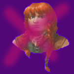

Important NPCs
Descriptions of notable NPCs follows.
Gracklestugh
NPCs met in Gracklestugh are listed below.
Errde Blackskull
Stoic and pragmatic, Errde is the Commander of the Stone Gaurd in Gracklestugh. She believes the leaders of the derro are conspiring to revolt and undermine the authority of the duergar and has pressed the party to seek out a derro known as Droki for clues.
Big Nasties
Below are the most fearsome foes you have so far encountered.
Baboon Goon "Leemoogoogoon"
The archpriestess of the cult of the "Deep Father" cried out "Leemoogoogoon" before being slain and indirectly summoning this loathsome demon. It is the most dangerous foe you have seen in your careers. Instead of facing a certain death, your group decided to flee towards Gracklstugh. Perhaps this monster will go away on its own. Right now its not your problem.
Sloobludop
Below are the notable personalities you met in the Kua-Toan village of Sloobludop.
Plooploopeen "Ploop"
Plooploopeen, or "Ploop", is the archpriest of the Sea Mother deity in the destoyed village of Sloobludop. You helped him overthrow his daughter's cult of the Deep Father, though things did not work out for the best.
Archpriestess of the Deep Father
The name of the priestess in unknown to you. You do know she was slain by her father, Ploop, during her sacrificial ritual to the Deep Father and that her death seemed to summon Leemoogoogoon.
Hemeth Thuldark
Hemeth is an arms dealer from the city of Gracklstugh. He was rescued from a likely death during the ritual sacrifice at Sloobludop. In return he helped navigate to Gracklstugh across the Darklake, and has offered to serve as your guide in the city.
Drow Jailers
Below are the drow who imprisoned you and now pursue you.
Ilvara
Ilvara is the warden of your former prison and is the most powerful of your pursuers. Little is known of her except that she hates Moa for insulting her during the first solid minute of the session 8 chase.
Jorlan
Jorlan is a badly burned drow cripple who helped you escape from the drow prison. While chasing you in the tunnels he cut down Eldeth.
Shoor
Shoor is Ilvara's current lover. You know little of him though he does hate Oni for hitting him with a guiding bolt on their first out-of-jail encounter.
Guldor
Guldor took an ass beating from your group during session 8 while his 3 friends collapsed around him. He managed to flee back to Ilvara and save himself from being scalped.
Society of Brilliance
Below are the members of the Society of Briallance you have met.
Grazzilax
Grazzilax is some sort of squid-headed being preoccupied with ammassing data. It provided you with food and water in exchange for information during one of the most arduous periods of your travel following your escape from the drow prison.
Drow Prison Inmates
Below are the 10 inmates who helped in your escape from the drow prison of Velkynvelve.
Stool
Stool is a myconid, a sort of sentient fungi. He stands 2.5' high and walks with a waddle upon his two stubby legs. He seems young and inexperienced, often asking questions about his surroundings. He provided you and the other inmates with a telepathic channel of communication by having you breath in his spores. Zodious and Stool formed a bond early on and Stool generally keeps close.
Sareth
A male drow, Sareth is brooding and silent, rarely volunteering information or showing interest. Several small pustules ooze from his forehead, and seem to be getting worse. You know little of him or why he was imprisoned by his fellow drow. He escaped with you and seems the most capable navigator of those who escaped with you.
Derendil
Derendil is a male Quaggoth looking creature. You were told by Jim Jar that he does not believe himself to be a quaggoth, though you have not discussed this with him. When he speaks, it is with a genteel, though rumbling, voice. During your escape however he fought with a wildness far removed from his otherwise seemingly calm demeanor. He proved a reliable companion until you lost him during your flight from Ilvara during Session 8.
Eldeth

A female dwarf, Eldeth was eager to speak with you from the start and fought bravely, though recklessly, during your escape. She is the only surface dweller among the prisoners you met. Last you saw her she collapsed under the whirling blades of Ilvara's lover during your encounter with the drow in Session 8.
Buppido
Buppido was a quiet derro, you did not learn much about him. During your escape he was surpisingly calm, the last you saw of him he was exchanging bolt fire from the guardroom with the drow.
Ront
Ront was a bullying orc, he showed great strength during your escape by cutting both silk bridges apart from the guardroom. Last you saw of him he collapsed from several drow bolts to the chest.
Topsy and Turvy
Topsy and Turvy were deep gnome twins, they kept to themselves. You saw Topsy bitten and carried away by a spider with Turvy screaming and wriggling in the webbing trying to pursue.
Jim Jar
Jim Jar was was very helpful deep gnome fond of betting. Somehow you lost track of him during your escape, it is unclear what his fate was.
Shushaar the Awakened
Shushaar was a kuo-toa (toadman) possesed of uncommon sensitivity. He gave you valuable information about the spurned love of Jorlan. You last saw him being wrapped into a web-snack by a large spider during your escape.
Ashabenford Acquaintences
Below are characters you met in or around Ashabenford.
Zoloft

A male dwarf ranger with a grill of semi-precious stones, Zoloft was hired by Noristuor to lead you to wyverns for slaying. He was interested in learning meditation from Galifraen but did not get far.
Noristuor
The resident mage of Ashabenford, Noristuor lives in a tower on the edge of town. Zodius approached the tower and offered his services. Noristuor spoke rudely and never opened his/her door but did offer a reward for wyvern stingers. Zoloft claims Noristuor also paid for his services in finding the stingers.
Spooky Mansion Notables
Below are those personalities that linger in your memory after leaving the mansion.
Torgo
Torgo, a middle aged male human, is a low-ranking member of the Red Listen cult, he is awkward and avoids eye-contact - and seems oblivious to social cues. He provided you with information about his fellow cultists during your time in the mansion. You left him at the White Hart Inn after leaving the mansion.
Donamoth

A demon who claimed that many of you had wronged him in a past life. He trapped you in the mansion of a famed, and murdered explorer named Quincy, and attempted to kill you. You slew his partially-manifested form in the basement of the mansion. Hopefully you've heard the last of him, at least in this lifetime.